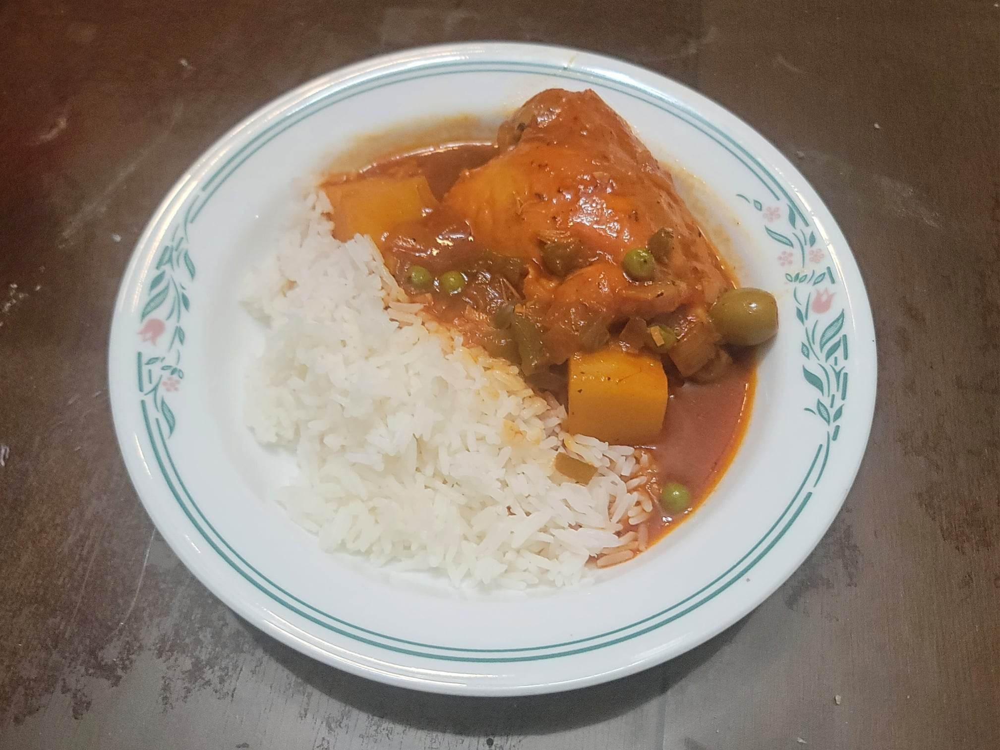

Fricase de Pollo

Ingredients:
- 8-10 Chicken thighs, bone-in, skinless
- 2 cups Mojo
- 1/4 cup Olive oil
- 1 tsp Salt, divided
- 1 medium Yellow onion, diced
- 1 Greed bell pepper, diced
- 4 cloves Garlic, minced
- 3/4 cup White wine
- 1 16 oz can Tomato sauce
- 1/4 cup Water
- 1/2 tsp Cumin
- 2 packets Sazón
- 1 tsp Dried oregano
- 1/2 tsp Black pepper
- 1/4 cup Pimiento filled olives
- 2 small Russet potatoes, peeled, 1" cubed
- 1/2 cup Frozen peas
Instructions:
- Combine the chicken and the mojo and let marinade overnight.
- Remove the chicken from the marinade and pat dry completely. Then season lightly with 1/2 tsp salt.
- Heat the olive oil in a pot over high heat. Sear the chicken in batches for about 2 minutes per side. Then remove from the pan and reserve.
- Add the onion and bell pepper and sauté until softened, about 5-7 minutes. Then add the garlic and sauté another 1-2 minutes.
- Add the white wine and bring to a simmer. Cook for about 2 minutes.
- Add in the tomato sauce, water, cumin, sazón, oregano, 1/2 tsp salt, pepper, and olives and add back in the chicken. Stir to combine and bring to a simmer. Simmer covered for 15 minutes.
- Add in the potatoes and simmer another 20 minutes.
- Remove the cover and add in the peas. Let cook just until the peas are heated. Serve immediately with rice.